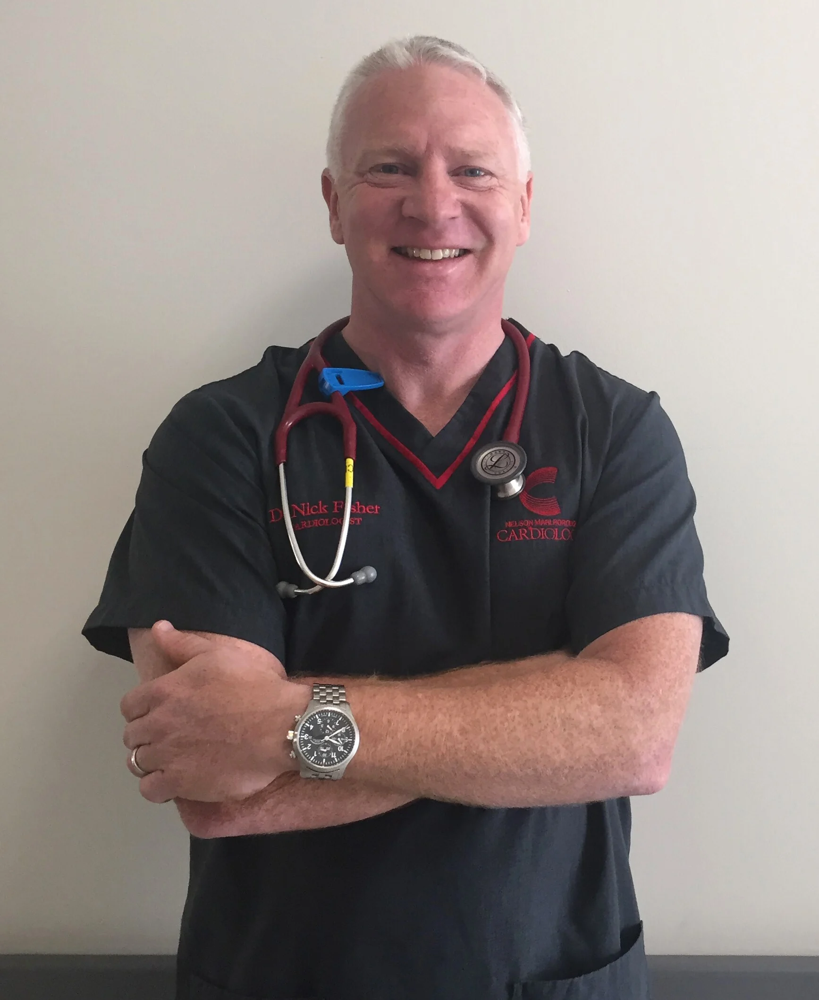
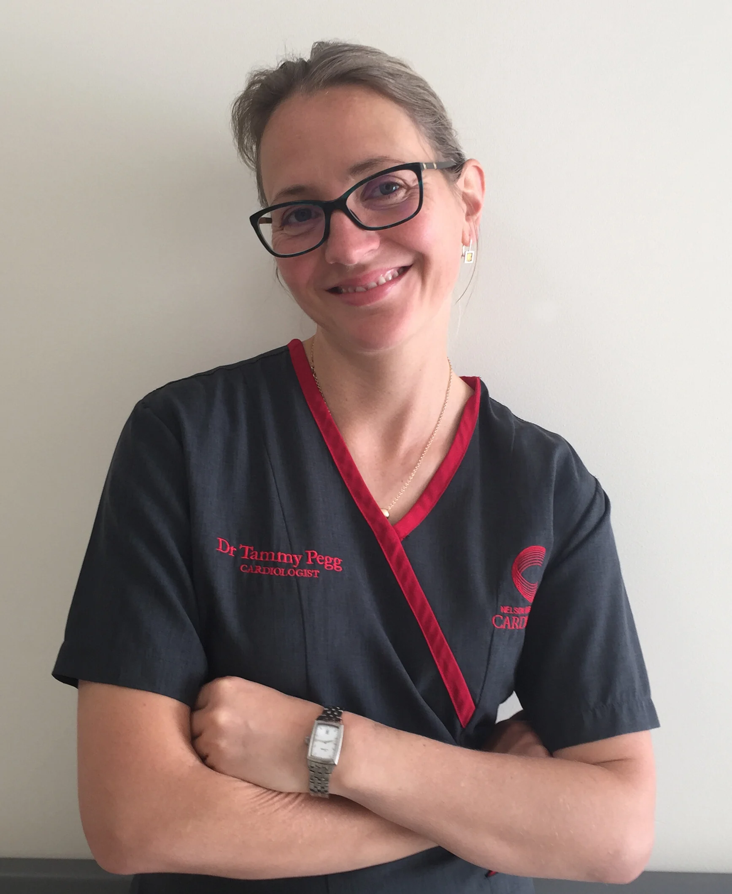
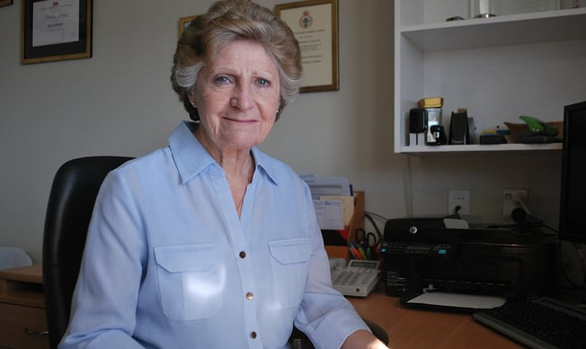
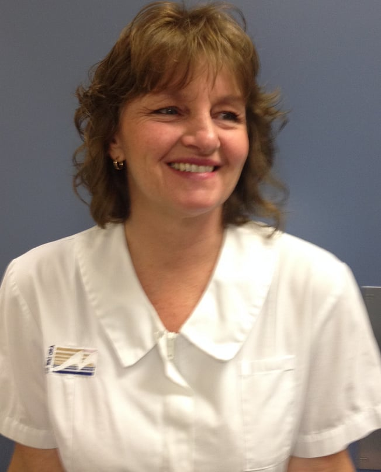
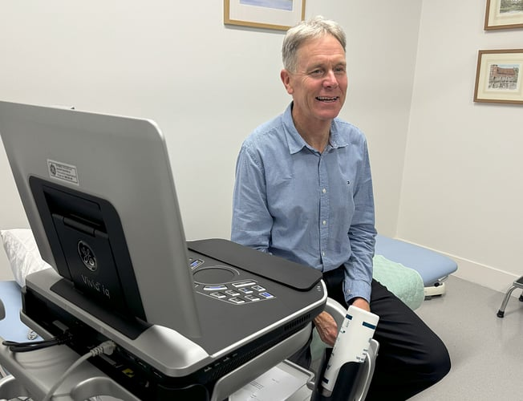
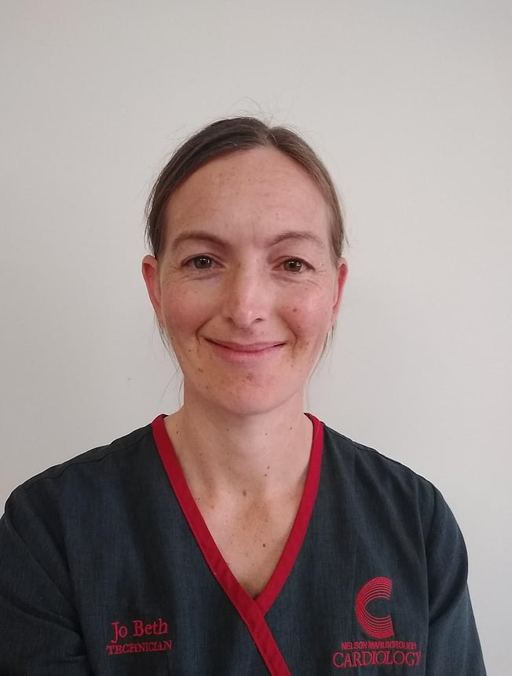
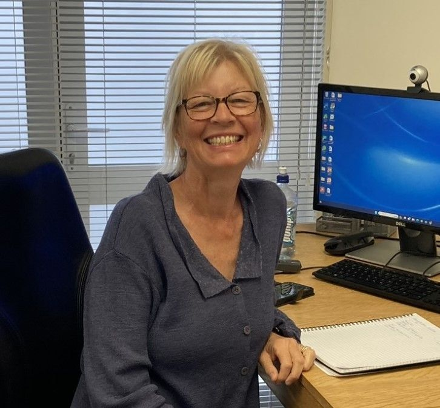
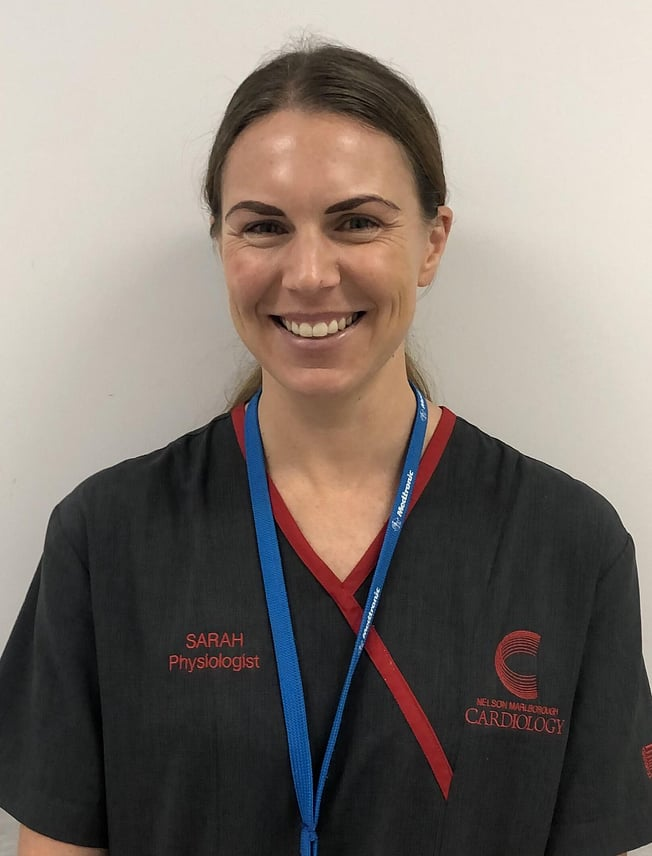
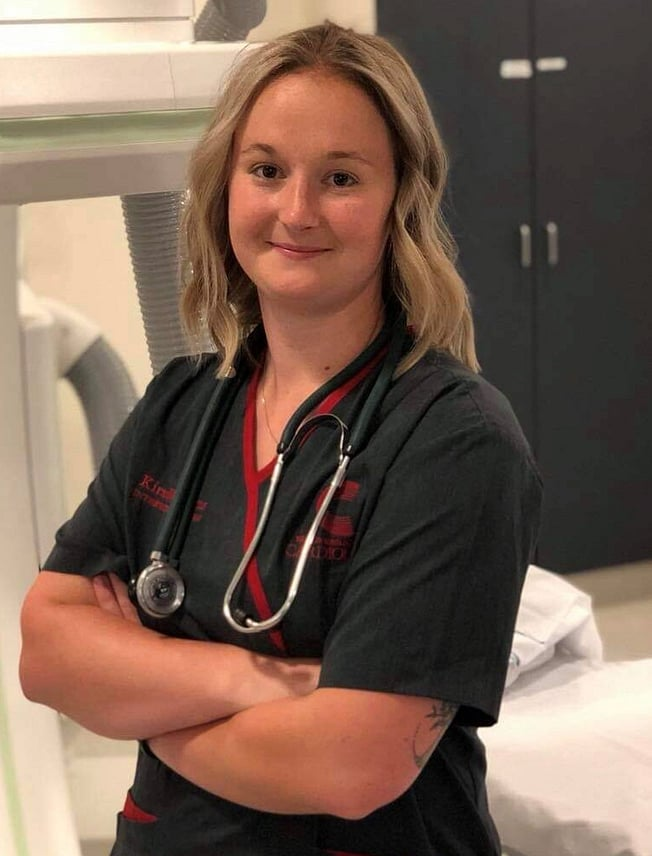

The Top of the South Cardiology team
The Top of the South Cardiology team
"To give our community the very best heart care, with compassion, respect, understanding and expertise."

Nick is an interventional cardiologist specialised in cardiac imaging with CT and angiography, stent and pacemaker insertion. In addition, his interests are cardiovascular risk assessment, valvular heart disease, palpitations and heart rhythm problems.
Nick is the founder and clinical director of Top of the South Cardiology and the Head of Department of cardiology at Nelson Marlborough DHB. He has also been influential at a national level leading the regional cardiac network and is the author of New Zealand's Expected Standards of Access to Secondary Care and the cardiology textbook Frontline Cardiology. In addition, he has numerous publications based on his clinical experience and research.
Before moving to New Zealand in 2006 Nick was a Cardiologist for the Royal Navy holding the rank of Surgeon Commander. He trained and practiced at the Royal Brompton Hospital in London. Having joined the Royal Navy in 1990 he experienced military conflicts in the Falklands, Gulf and the Adriatic.
When he's not working Nick can be found fishing or on his vineyard.

Tammy is a cardiologist who specialises in Heart Failure and Non-invasive imaging including CT and cardiac MRI. In addition her interests are cardiovascular risk assessment, valvular heart disease, palpitations and heart rhythm problems.
She graduated with honours from the University of Leeds in 2000. After house jobs, Tammy undertook basic medical training at the University of Manchester Hospitals and gained membership to the Royal College of Physicians in 2003.
In 2004 Tammy commenced advanced training in Cardiology in the Wessex Deanery. In 2005 she commenced a PhD in cardiac surgery at the University of Oxford, working with one of the UK's leading cardiothoracic surgeons. Her work involved improving surgical techniques in patients with heart failure and cardiac magnetic resonance imaging for the assessment of heart function and injury. In 2008 she was awarded her PhD and has been widely published in peer review cardiology journals.
In 2008 she was a finalist for the Vivenne Thomas American Heart Association Young Investigator of the year award and also the New Zealand Heart Foundation Young Investigator of the year.

Originally from Ireland, Niall completed his undergraduate medical degree in University College Dublin, graduating with honours. He completed his early postgraduate years in the Mater Hospital, Dublin before moving to New Zealand in 2011.
Niall completed his cardiology advanced training in Wellington before embarking on an electrophysiology and cardiac device fellowship where he gained extensive experience in treating both common and complex heart rhythm problems. He has a particular interest in cardiac pacing and the implantation and follow up of complex devices.
Believing strongly in the value of shared decision making and a therapeutic relationship, Niall places a strong emphasis on helping patients understand the nature of their condition and treatment options to maximise patient outcomes and quality of life.
In his spare time, he enjoys football, running, snow sports and travel.

Kate is the matriarch of the practice and often the first point of contact you will have. With a background in nursing she is well versed with cardiac problems and will guide you smoothly through the consultation, investigation and follow up process.

Debbie is often the first friendly face that will greet you for your treadmill test. With years of experience she will confidently make sure that the test provides the information that the doctors are looking for.

You will not meet a Cardiac Sonographer more passionate about his profession — in Steve's case his vocation. Steve has arguably scanned more hearts than any other Sonographer in New Zealand, having done so for greater than 35 years. Dual trained in Paediatric and Adult Echocardiography with a background in Radiography and General Ultrasound, and with extensive experience throughout much of New Zealand, the UK and Australia, Steve has remained incredibly passionate about his craft.

JoBeth is a qualified clinical physiologist, having completed a postgraduate diploma in medical technology and training in cardiac and respiratory testing. She is involved in the treadmill and lung function testing for the Top of the South Clinic and is passionate about providing quality testing to guide physician clinical decision making.

"I have over 35 years experience as a registered nurse with the past 22 years as a specialist nurse in cardiology. I completed my masters degree in 2015 and have additional post graduate studies in this area. I enjoy all aspects of cardiology with a focus on assessment, management and education of heart patients. My priority is to ensure you understand your heart health and why particular treatments and lifestyle measures are introduced."

Sarah did her physiology training in Christchurch with particular interest in electrophysiology. She moved to London afterwards and gained invaluable experience working at the largest NHS trust in England. Family brought Sarah home to Blenheim and she now looks after the pacemakers and holter analysis at Wairau Hospital.

Kirstie is the cardiology charge nurse. After moving from Wales in 2008, Kirstie completed her bachelor of nursing degree in Nelson before moving to pursue a career in cardiology at Wellington cath lab. She returned to Nelson cath lab to pursue her dream of becoming a cardiology charge nurse. Kirstie will be one of the first nurses to greet you when you arrive for your cardiac angiogram — she is passionate about providing gold standard patient care and making you feel comfortable. She also makes an excellent cup of tea.
Ready to see one of our cardiologists?
You will need to be referred by your GP or practice nurse. We will contact you as soon as we have received your referral letter.